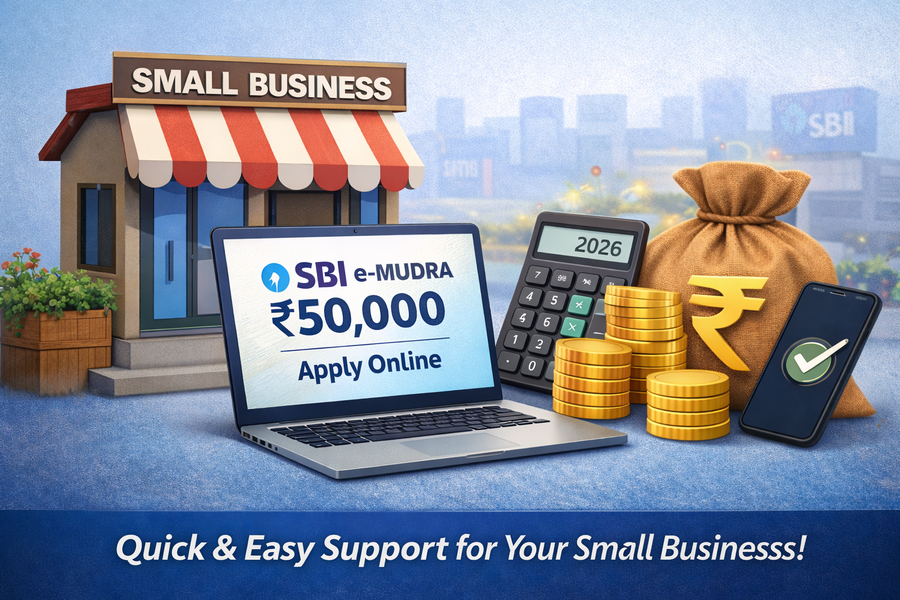

If you are running a small business or planning to start one, managing money can be challenging in the beginning. To support small entrepreneurs, the Government of India introduced the Pradhan Mantri Mudra Yojana (PMMY). Under this scheme, State Bank of India (SBI) offers the e-Mudra Loan of up to ₹50,000, which can be applied for online.
In this guide, we will explain everything in a simple and easy way — what SBI e-Mudra loan is, who can apply, documents required, interest rate, and how to apply online step by step.
What Is SBI e-Mudra Loan?
The SBI e-Mudra Loan is a collateral-free business loan provided under the Mudra Yojana. It is designed for micro and small businesses that need a small amount of capital to start or expand their work.
Mudra loans are divided into three categories based on the loan amount:
| Loan Category | Loan Amount |
|---|---|
| Shishu | Up to ₹50,000 |
| Kishore | ₹50,001 to ₹5,00,000 |
| Tarun | ₹5,00,001 to ₹10,00,000 |
This article focuses only on the Shishu category, which means an SBI e-Mudra loan of ₹50,000.
Who Can Apply for SBI e-Mudra Loan 50,000?
SBI e-Mudra loan is meant for people involved in small-scale businesses or self-employment. You can apply if you fall under any of the following categories:
- Small shop or kirana store owners
- Street vendors and hawkers
- Tailors, electricians, plumbers, mechanics
- Home-based business owners
- First-time entrepreneurs
- Self-employed individuals
Basic Eligibility Criteria
- Applicant must be an Indian citizen
- Minimum age should be 18 years
- Should have a small business or business idea
- Must have a valid Aadhaar and PAN card
- Active bank account (preferably SBI)
No collateral or security is required to apply for this loan.
SBI e-Mudra Loan 50,000 Interest Rate
The interest rate for the SBI e-Mudra loan is decided by SBI and may vary depending on the applicant profile. However, it is generally affordable compared to private loan apps.
- Interest Rate: Around 8% to 12% per annum
- Loan Tenure: Up to 5 years
- Processing Fee: Usually Nil
Exact interest rates are confirmed at the time of approval.
Documents Required for SBI e-Mudra Loan
One of the biggest advantages of the e-Mudra loan is minimal documentation.
- Aadhaar Card
- PAN Card
- Passport-size photograph
- Bank account details
- Basic business proof or declaration
In many cases, SBI accepts simple business details without complex paperwork.
How to Apply for SBI e-Mudra Loan 50,000 Online
Follow these steps carefully to apply online:
Step 1: Visit Official SBI e-Mudra Website
Always use the official SBI website to avoid fraud or fake agents.
Step 2: Choose e-Mudra Loan Option
Select the Shishu loan category and proceed with the application.
Step 3: Fill the Online Application Form
Enter your personal, business, and bank details carefully.
Step 4: Upload Documents
Upload scanned copies or clear photos of Aadhaar, PAN, and other required documents.
Step 5: Submit the Application
After submission, note down the reference number for tracking.
Step 6: Bank Verification & Disbursal
SBI may contact you for verification. Once approved, the loan amount is credited to your bank account.
How Much Time Does SBI e-Mudra Loan Take?
- Online application: 10–15 minutes
- Verification: 3–7 working days
- Loan disbursal: Within 7–10 working days
Common Reasons for Loan Rejection
- Incorrect Aadhaar or PAN details
- Inactive bank account
- Incomplete application form
- Applying through fake websites
- Poor loan repayment history
Is SBI e-Mudra Loan Safe?
Yes. SBI e-Mudra loan is a government-backed scheme provided by State Bank of India. There are no hidden charges, and SBI never asks for money to approve a Mudra loan.
Frequently Asked Questions (FAQs)
Is collateral required for SBI e-Mudra loan?
No. SBI e-Mudra loan is completely collateral-free.
Can I apply without a shop?
Yes. Home-based and self-employed businesses are eligible.
Is Aadhaar mandatory?
Yes, Aadhaar is required for verification.

Final Thoughts
The SBI e-Mudra Loan ₹50,000 is an excellent option for small business owners who need quick and affordable financial support. With easy online application, low interest rates, and minimal documentation, it is ideal for beginners and micro-entrepreneurs.
If you have a business idea or need working capital, this loan can help you grow without heavy financial pressure.